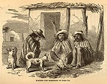
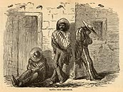

){kind=link}
){kind=link}
){kind=link}

|
[From] Chapter XVI. Magdalena. The only production against which there seems to be no limit, and certainly no effective law, is that of children. Owing to the climate, perhaps, and idleness, which is the father of all mischief and many mixed breeds of babies, these mongrel little humans abound to an amazing extort in the small towns of Sonora. Nearly all of them have Indian blood in them, and many denote a growing proclivity toward the American race. Hence yon often see in one family a remarkable variety of races. A mother with white-headed and blue-eyed children, and black-headed and black-eyed children, and children with straight hair, and curly hair, and thin lips, and thick lips, and noses long, and noses short, all bearing a strong family resemblance, is a very common kind of mother in this latitude. Occasionally some beneficent Padre goes through the country doing up a long arrearage of marriages, putting together in the holy bonds of wedlock all who desire to secure by the rites of the Church the partners with whom they chance at the time to be on terms of domestic intimacy. For this reason I think Sonora can beat the world in the production of villainous races. Miscegenation has prevailed in this country for three centuries. Every generation the population grows worse; and the Sonoranians may now be ranked with their natural compadres--Indians, burros, and coyotes. The worst of the whole combination of races is that which has the infusion of rascality in it from American sources. Mexican, Indian, and American blood concentrated in one individual makes the very finest specimen of a murderer, thief, or gambler ever seen on the face of the earth. Nothing in human form so utterly depraved can be found elsewhere. I know of no exception, and do not believe a good citizen of sound morals ever resulted from such an abominable admixture. Of such material as this is the town of Magdalena composed. It is said to be a very quiet and orderly place compared with Hermosillo,and I can well believe the statement; for while Magdalena has not been much favored with the presence of renegade Americans within the past few years, Hermosillo has long been their favorite place of resort, chiefly because it affords a more extensive field for the exercise of all the depraved passions of human nature.  We remained about two days in Magdalena, during which we greatly enjoyed the hospitality of our friend Gonzales Torrano. It is due to this gentleman to say, that he has done more for the accommodation of American travellers on their way through Sonora, and afforded them more assistance in procuring supplies of implements and provisions for their mining operations than any man in the country. He has done this without profit or reward, chiefly from the natural promptings of his heart, and incidentally from a liberal and intelligent desire to see the resources of this vast mineral region properly developed. It is evident to any one passing through Sonora, even as far north as we did, that a great change is going on throughout the State. Every steamer from San Francisco lands at Mazatlan and Guyamas from 100 to 200 passengers, many of whom, disappointed in more northern regions, desire to establish themselves in the rich mineral fields of the south. Political disaffection toward their own Government may have something to do with this influx of Americans within the borders of Sinaloa and Sonora; but I would not like to say any thing vindictive on that point--especially as most of these enterprising adventurers are at present without money, and not a few of them dependent upon the charity of the Mexicans, who complain that they are obliged to support them. Quite a number of the more energetic, however, are making an honest living by driving teams, blacksmithing, or doing rough jobs of painting and housework. As yet but few have derived any income from the silver mines, though all are pretty rich in claims. [From] Chapter XVII. Dona Inez. I was interested in taking some views of the scenery in the Cocospera by Mr. Bartlett's romantic narrative of the captivity and sufferings of Dona Inez, a young Mexican girl, whose family were murdered in this canon about twelve years ago, and herself captured and held in bondage by the Apaches for fifteen months, subject to the most cruel treatment. News of her captivity having reached Mr. Bartlett during his service as Boundary Commissioner, he made a demand upon Mangus Colorado,the Apache chief, for her release. The answer was insolent and characteristic--that it was none of his business; this was a matter between the Apaches and the Mexicans. Mr. Bartlett explained that under the treaty between his Government and Mexico the officers of the United States were bound to aid the authorities of Sonora in suppressing Indian hostilities; that this was a very flagrant case, and if the girl was not at once de}ivered up he would proceed to take her by force. Having a strong party to back np his demand, it was deemed prudent by the cunning Apache to comply with it, and Dona Inez was reluctantly delivered to the Commissioner, who turned her over to Captain Gomez, of the Mexican army, then commandant at Tubac. It was admitted by all that Mr. Bartlett had manifested a most praiseworthy and chivalrous interest in the misfortunes of this young wuman. At the tender age of fifteen she had seen her relatives murdered before her eyes; had been dragged over mountains and deserts by ruthless savages; had suffered the most cruel barbarities at their hands; and was now once more, by the exertions of this humane American, restored to her friends and to civilization. The delicate and chivalrous conduct of Mr. Bartlett toward the fair captive can not be too lighly estimated, considering her beauty and the peculiar circumstanees of her career. Far different was the course of Captain Gomez, who, upon finding a beautiful young woman placed in his charge--of his own country too--fell desperately in love with her, and, contrary to all the rules of propriety, took her to lodge in his own quarters. When Mr. Bartlett next heard of her she was the idol and the ornament of the house of Gomez, who loved her not wisely but too well to marry her, having already a wife in the city of Mexico. This breach of duty and implied faith aroused the indignation of our Commissioner, who had so nobly rescued and delicately cherished the divine Inez; and it is currently stated in Arizona that he made it a subject of official protest to the Governor of Sonora and a letter of serious complaint to the Bishop. The Governor and Bishop, as I am told, were greatly mortified at the conduct of Gomez; but upon receiving his explanation, which was to the effect that his wife was still living, and would be very unhappy if he married another woman, they acquitted him of all blame in the matter, and Dona Inez continued to enjoy the hospitality of his mansion. The sequel of the romance I find recorded in my own note-book. Dona Inez is married and settled at Santa Cruz. Her husband is not Captain Gomez. I called at her house in company with Mr. Poston, and had an interview with her on the subject of her captivity among the Apaches. She had heard of the narrative of her adventures written by Mr. Bartlett, but had never seen his book. She spoke kindly and gratefully of her deliverer. On the subject of her treatment by the Apaches she was somewhat reserved. Her husband was much more communicative. Dona Inez is now about twenty-seven years of age, though she looks older. Her features are thin, sharp, and care-worn, owing to ill-health. Possibly she may have been pretty in her youth. Mr. Bartlett thought so, and he ought to be a judge. He saw a great deal of beauty unadorned in his tour of exploration. [From] Chapter XIX. The Town of Santa Cruz.  I thought I had seen the concentration of filth, laziness, and inanity, and the perfection of vicious mixtures of races at Imuriz and Magdalena; but Santa Cruz caps the climax. The more southern towns possess at least the advantage of a genial temperature, and it is not unpleasant to see people enjoy the dolce far niente, even if they indulge in it to excess. The chilling climate of Santa Cruz sweeps away all the dreamy illusions of indolence, and reduces the inhabitants to a condition of torpor depressing to witness. Too inert to stir about and gather sufficient wood for a comfortable fire, a genuine native of this region sits shivering all day long over three twigs of mesquit, his dirty serape drawn up over his shoulders, his skin a bilious black yellow, the inevitable cigarrito in his month; a score of starved coyote curs snapping around his heels; no gleam of hope in his eye, no spark of ambition in his nature--a dreary spectacle of wretchedness and inanity. |